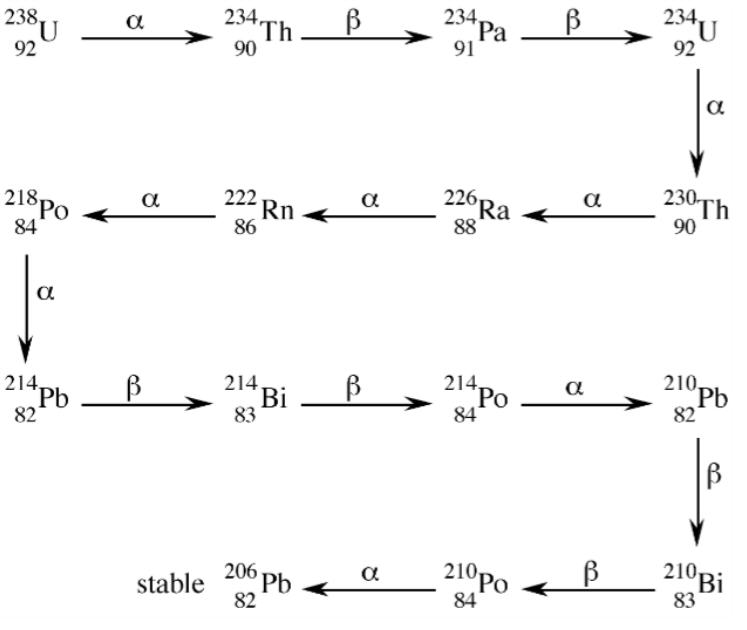

|
|---|
| Feature Article - November 2010 |
| by Do-While Jones |
Missing short-lived isotopes don't prove the Earth is old.
There is an Old Earth creationist site that claims missing radioactive isotopes are proof that the Earth is many millions of years old. Apparently it must have gotten some sort of attention lately because we've received several emails asking us about it.
The Accuracy in Genesis site presents "a table of all 29 known radioactive isotopes that have a half-life of one million years or more, and that are not being continually produced by natural nuclear reactions." 1 All the isotopes with half-lives of less than 80 million years are not found in nature. The isotopes with half-lives greater than 700 million years are. They conclude,
|
The most obvious explanation for the above is that all these elements were present when the Earth was formed, but by now the short-lived ones have decayed away. This explanation is compatible with the age scientists accept for the Earth. 2 |
Their explanation is based on faulty reasoning used by evolutionists that is hardly ever mentioned, even on creationist sites. But before we delve into that fallacy, and present a better explanation, let's explain the missing isotope argument more clearly than they do.
They assume you understand what isotopes are, and how they are formed. In many cases that may be true. If you don't know, their argument won't make any sense. So, here is a simplified explanation about how radioactive decay produces isotopes.
The nucleus of an atom is made up of protons (which have a positive charge), neutrons (which have no electrical charge), and a bunch of other lightweight subatomic particles irrelevant to our current discussion. An isotope is an atom with a specific number of protons and neutrons.
Protons and neutrons both weigh "one atomic mass unit." An isotope is defined by the combined number of protons and neutrons, which is its "atomic mass."
The number of protons in the nucleus is called the "atomic number." It determines what kind of atom it is. For example, any atom with 6 protons is a carbon atom.
The most common carbon isotope, Carbon 12, is made up of 6 protons and 6 neutrons. Therefore carbon's atomic number is 6, and its atomic mass is 12. Some carbon atoms have 6 protons and 7 neutrons. This isotope is called Carbon 13. Some carbon atoms have 6 protons and 8 neutrons. That isotope is called Carbon 14.
Some isotopes are stable. That is, they last forever. Other isotopes are radioactive. They decay spontaneously. In the case of Carbon 14, occasionally one of the neutrons will eject a negatively charged Beta particle (which has negligible weight), causing that neutron to turn into a proton. The nucleus now contains 7 protons and 7 neutrons. It still has an atomic mass of 14, but since it contains 7 protons it is no longer carbon. It has become Nitrogen 14.
We can't predict which Carbon 14 atom will decay any more than we can predict which particular crystal in an ice cube will melt first. But, knowing the temperature (and the size of the ice cube) we can predict how long it will take for half of the crystals in an ice cube to melt. In the same way, we can't predict which Carbon 14 atom will decay into Nitrogen 14; but we do know how long it will take for half of the atoms to decay. That time is called the "half-life."
The more atoms there are, the better the chances are that one will decay. When there are only a few atoms, the odds are poorer that an atom will decay. That's why, if you draw a graph of the number of atoms left, it will not be a straight line. In the beginning, when there are lots of atoms to decay, the graph will drop rapidly. Later, when there are few atoms to decay, the graph flattens out. The graph looks like the left side of a skate-board half-pipe.
|
|---|
We've used carbon in our example because the small numbers make it easier to do the math (6+8 = 14 = 7+7). Furthermore, carbon decays using a process called Beta decay, in which an electron is ejected from a neutron, which changes the neutron into a proton.
The heavier elements decay two ways. In addition to Beta decay, they also experience Alpha decay. In Alpha decay, two protons and two neutrons break off from the nucleus. The result is a lighter element (whose atomic number is 2 less than the original atom, and whose mass is 4 atomic mass units lighter than the original atom) and an Alpha particle (which has an atomic number of 2 and an atomic mass of 4).
Uranium is a typical heavy radioactive atom. It decays to lead in a series of steps shown in the diagram 3 below.
 |
|---|
The diagram shows that uranium (with an atomic number of 92 and a mass of 238) decays to thorium (with an atomic number of 90 and a mass of 234) by alpha decay. But thorium is also radioactive, so it decays, too. After a bunch of other radioactive decay steps, the process eventually ends with a stable isotope of lead (whose symbol is Pb because of its Latin name), with an atomic number of 82, and an atomic mass of 206.
The only thing you really need to know about this diagram is that as uranium decays to lead, it produces several intermediate isotopes. Some of these isotopes last for very many years before decaying. Some last for a few years. Some only last for seconds.
This whole explanation was necessary to get back to the notion of naturally-produced short-lived radioactive elements. There are some radioactive elements with short half-lives that are found in nature. The reason we can find these elements is because they are continually being produced by the decay of larger radioactive elements, such as uranium. If they weren't being continually produced, we would not be able to find them after some period of time because they all would have decayed.
The modern periodic table also contains man-made elements that don't occur in nature. These elements are made using machines to smash lighter atoms together hard enough to make them stick together. They generally decay rather quickly--sometimes too quickly to verify that they really existed.
Because we can produce these radioactive isotopes in the laboratory, we know what their properties are. That is, we know how much they weigh and how long it takes them to decay. But we can't find them in nature. They only exist in the laboratory.
Now that you have patiently endured this long background explanation, here's the payoff! The Accuracy in Genesis website claims that the fact we can't find any of these artificially produced isotopes in nature is because the Earth is so old that they have all decayed. This assumes that these artificial, short-lived isotopes once existed in nature. But since they don't occur naturally now, there isn't any reason to believe that they ever occurred naturally. The reason we can't find any of these short-lived artificial isotopes in nature now isn't because they all decayed--it's because they never existed in the first place. They can only be produced in a laboratory.
Here's an important point that is almost always missed: The processes we observe that destroy things today are never the processes that created them originally. The forces that cause a wall to crumble are not the same forces that built the wall in the first place. The process that is causing me to go bald is not the process that caused me to grow hair on my head to begin with.
Mutation and natural selection can cause existing species to change to some extent, or go extinct; but that doesn't mean that mutation and natural selection created those species.
This is such a simple point that it should not be worth mentioning; but it is such an important point it must be mentioned. We challenge you to think of any process that changes anything and also created that thing. Yet it is asserted (without proof) that evolution (which certainly does cause existing creatures to change to some limited extent) is the process that created all existing creatures. "Survival of the fittest" (more accurately described as "death of the less fit") does not create any thing new.
We began this article talking about the "missing" isotopes. These are isotopes that are not produced by the decay of other radioactive elements and cannot be found in nature today. The unstated assumption is that the missing isotopes must have been created by some other, unknown process when the Earth formed. That's not a reasonable assumption.
Some people would argue that just because we don't know what the unknown process was, that doesn't prove it didn't happen. Maybe a star exploded and created all those isotopes that can only be created today by atom smashers. Students are being taught in American public schools that a "maybe" explanation is better than no explanation at all. Since nobody can come up with a better explanation, it must be true that an exploding star created all the isotopes that have never been found in nature.
Students aren't supposed to question the teacher when it is asserted that things that have never been found in nature must have once existed, but are now gone, because the theory says they must have existed at one time.
In that respect, missing isotopes are no different from missing links. Missing links have never been found (that's why they are called "missing" links), but they must have existed because the theory says they must have existed.
When it is impossible to find things that a theory says must have existed, one must question the validity of the theory.
| Quick links to | |
|---|---|
| Science Against Evolution Home Page |
Back issues of Disclosure (our newsletter) |
| Web Site of the Month |
Topical Index |
Footnotes:
1
http://www.accuracyingenesis.com/missing.html
2
ibid.
3
This diagram can be found many places. We happened to get it from the Connections website, http://cnx.org/content/m31328/latest/. We recommend you visit the Connections website for an excellent, much more detailed explanation of radioactive decay.